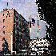

Découvrez la célèbre ville de LILLE

Découvrez la célèbre ville de LILLE
Allez visiter le serveur de l'Université Lille I

Où encore celui de Valenciennes

Et pourquoi pas faire un petit tour à Centrale Lille ?
Renseignez-vous sur la canditature de Lille aux Jeux Olympiques de 2004
Si vous voulez avoir d'autres pointeurs sur une région de votre choix